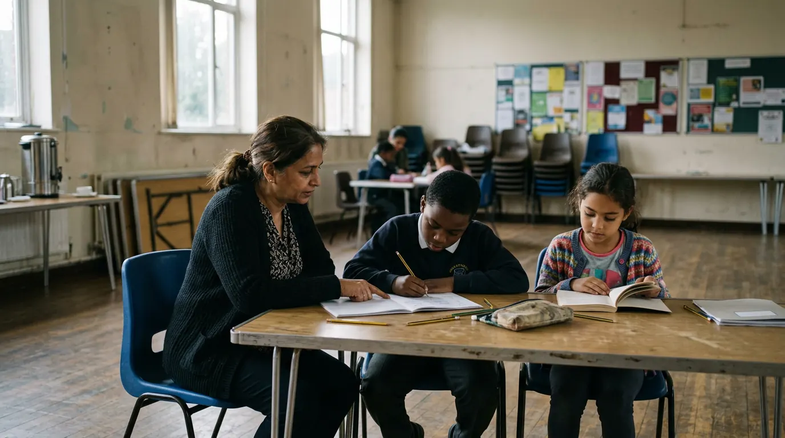

Homework club and academic support
A quiet space for children and young people to study, build confidence, and get encouragement from local volunteers and partners.
First sessions we're planning
- Homework support session A quiet homework club, shaped around the ages and subjects people ask for.
Activities and aims
- Quiet and structured study space after school
- General homework encouragement and study routine support
- Access to books, worksheets, and quiet study materials where available
- Building confidence and positive study habits
- Signposting to specialist academic support where needed
Positive outcomes
Children develop stronger study routines, greater confidence, and a more positive relationship with learning.